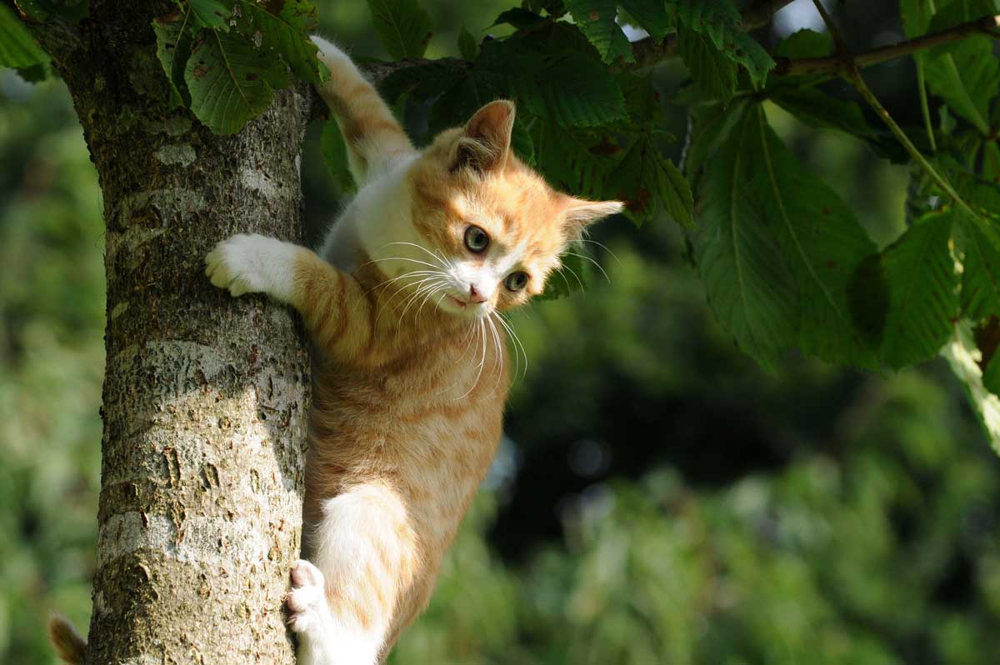

Niedliche KATZENBöse
Jerry
Jeder Katzenhasser wird als Maus wiedergeboren.Mietzi
Ich bin klein, mein Herz ist rein.Lass mich Deine Lieblingskatze sein.

Molly
Katzen liegen nicht faul rum.Sie dekorieren den Baum.
Lucy
Eine Katze auf den Sterbebett: Rückblickend hätte ich viel mehr aus meinen sieben Leben machen sollen.

Katzentier
Was sagt eine Maus hinter einer Kuh? Mach bloß kein Scheiß.DuDa
Warum hat die Katze Öl auf die Maus gegossen? Weil sie so gequietscht hat.
Minz
„Ich bin adlig und heiße Mieze vom Schlosspark und du?“ - „Ja, ich bin auch adlig, ich heiße ,Runter vom Sofa‘!“Maunz
Die Bedeutung von Katzen ist, dass wir lernen müssen, dass nicht alles in der Natur eine Bedeutung hat.Miau
Ich kann mich ihnen selber vorstellen.Mimi
Nicht alle Engel haben Flügel, manche haben Schnurrhaare.Bella
Der Katzen Scherz ist der Mäuse Tod.Mila
Das ist kein Kanarienvogel, der ist grün. Vielleicht ist er noch nicht reif?Böse KATZEN lieber niedliche
Leo:
Ihr Hund ist ja zum Fürchten, wo haben sie denn den her?Der ist mir im Urlaub in Afrika zugelaufen. Ich habe ihm nur die Mähne abgeschnitten.
Pantheros:
Schwarzer Humor ist wie Essen.Hat nicht jeder.
Tigero:
Wie nennt ein Tiger einen Skater?Rollbraten.
Leon:
Alle Kinder besichtigen Löwen im Tierpark, nur nicht Jutta, die ist Futter.Leodor:
Zwei Löwen fressen einen Clown. Meint der Eine: Schmeckt irgendwie komisch.Tigra:
Wie nennt ein Tiger Skelette?Rollbraten
Tigri:
Was ist bei Elefanten klein und bei Tigern groß?Der Buchstabe "T".
Leonodus:
Ein Pfarrer ist allein auf Safari. Da begegnet er plötzlich einem Löwen. Er denkt: „Oh Herr, lass diesen Löwen ein christlicher sein!“ Der Löwe denkt: „Oh Herr, segne diese Mahlzeit!“Pantheror:
Was steht auf dem Grabstein eines Mathelehrers?Damit hat er nicht gerechnet!